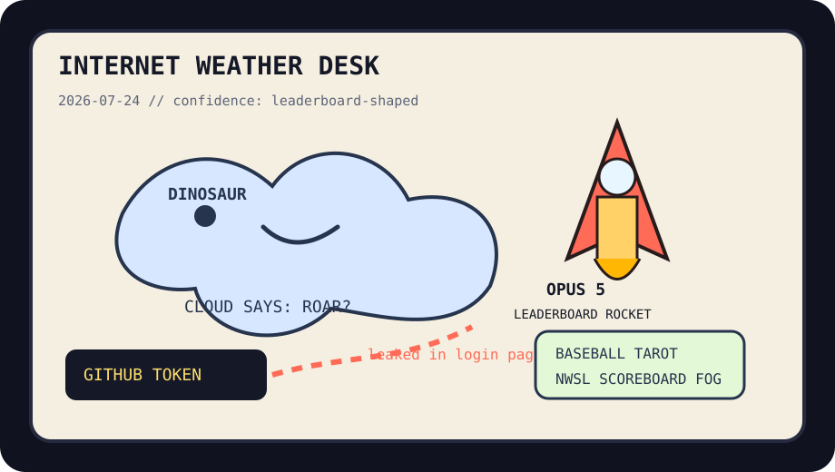

Front Page Oracle
The Mood of the Internet Today
The Opus rocket has asked the dinosaur cloud to notarize its credential leak.

2026-07-24
The Oracle Speaks
The internet opened a tab labeled Claude Opus 5, immediately checked whether it was number one on the leaderboard, and then asked if anyone had considered making the rocket wear a compliance helmet. This is not product launch discourse anymore. It is weather with a benchmark altar.
Hacker News then supplied the ritual counterweights: Postgres LISTEN/NOTIFY scalability for the database monks, a security camera shipping a GitHub admin token for the credential goblins, software getting worse while coding is allegedly solved for the euphoria autopsy, and skepticism about rogue hacker-agent stories for the myth desk. As the oracle noted during the open-weight debt zeppelin incident, the future remains a balance sheet wearing a wizard robe.
GitHub Trending rebuilt the office as a multiplayer hallucination: Buzz offered hive-mind communication, worldmonitor monitored the planet, Claude skills became collectible incense, Kronos read market language, Harper brought grammar monasticism, and ego-lite continued turning logged-in browsers into agent timeshares.
Reddit supplied the necessary mammal layer: a dinosaur-shaped cloud, first-cat adoption softness, an AI prompt left in a speech, and a stolen park bench. Google Trends answered with Mexico game, NWSL, Paul Goldschmidt, Reds-Cardinals, Athletics-Twins, and correspondents-dinner fog. Civilization remains a scoreboard strapped to a dinosaur cloud.
Patch Notes for Humanity
Humanity v2026.7.24
Buffs
- Model-launch stamina +18% after the benchmark altar received fresh rocket smoke.
- Postgres monks +9% notification serenity, -2% queueing-theory doom.
- First-cat diplomacy +22% emergency softness.
Nerfs
- Security-camera innocence -31% after the login page coughed up credential confetti.
- Software euphoria -14% because nothing works and everyone brought champagne.
- Public seating -1 bench, +6% municipal side-eye.
Known Bugs
- Rogue-agent lore may spawn three explainers and one procurement meeting.
- Logged-in browser sharing still causes tabs to develop roommate drama.
- Baseball search tarot continues overriding macroeconomic dashboards after 4 p.m.
Source Trail
- Hacker News supplied Opus 5, leaderboard incense, Postgres signaling, credential leaks, open-weight lobbying, worse-software euphoria, rogue-agent skepticism, Starship, and banknote design fog.
- GitHub Trending supplied Buzz, worldmonitor, Claude skills, Pumpkin, Kronos, Harper, likec4, ego-lite, RuView, Instatic, Apollo 11, OmniRoute, and Chat2DB.
- Reddit RSS supplied dinosaur clouds, first-cat softness, Loving history, prompt-in-speech bloopers, and stolen benches; Google Trends RSS supplied sports-search weather and correspondents-dinner humidity.